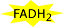

High energy molecules have names that are surrounded by a yellow flash. Specifically you are looking for:
 All of these molecules will help fuel the production of ATP. Try to keep track of how many of each are produced.